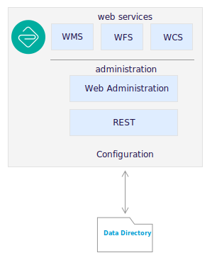

Writing Guide¶
Sphinx writing guide providing cut and paste examples. Each section provides a visual example along with the a code-block showing the rst directives used. Where the example depends on config.py configuration, or page stucture, these will be noted also.
A visual example linking to Writing Guide.
A visual example linking to :doc:`index`.
index.rst:
Writing Guide
=============
Page heading above is as text shown for internal :command:`doc` links.
Note
Rich Structured Text is very flexible and and there are often more than one way to define lists, tables, or bold a couple of words in a paragraph. This writing guide only shows one way, and very rarely provides a note on practices to avoid.
References:
Style guide for Sphinx-based documentations (readthedocs)
Sphinx Syntax and Style Guidelines (GeoServer Documentation Guide)
Document Structure¶
Table of contents, Pages and Headings¶
Headings are tricky to manage as they need to be consistent across pages, and form a table of contents structure for the document as a whole.
index.rst:
########
Document
########
.. toctree::
:maxdepth: 2
:caption: Contents:
section/index
chapter/index.rst:
*******
Chapter
*******
.. toctree::
:maxdepth: 2
:caption: Contents:
page
chapter/section.txt:
Section
=======
Heading
-------
Subheading
^^^^^^^^^^
subsubheading
"""""""""""""
Note
Technically RST defines heading levels based on the order they appear within a page, however sphinx use of multiple pages to form a larger document and tabel of contents structure dictates consistent use of headings as shown above.
Reference:
Headings (readthedocs.io)
Lists¶
There are two types of lists, bulleted lists and numbered lists.
Bulleted list¶
Bullet lists are useful for a small number of items, where no order is implied:
Applicable standards:
iso19139: describing information or resources that have geographic extent
iso19110: classification of feature types into a feature catalogue
Applicable standards:
* iso19139: describing information or resources that have geographic extent
* iso19110: classification of feature types into a feature catalogue
Note
Example Bullet lists should all be of a consistent style, either short sentence fragments, or full sentences.
Switch to numbered lists when presenting more than five ideas.
Numbered list¶
Numbered lists used to define step-by-step instructions or present a larger number of ideas.
Reproject
roadsfrom WGS84 to Web Mercator:ALTER TABLE roads ALTER COLUMN geom TYPE geometry(MULTILINESTRING, 4326) USING ST_SetSRID(geom,4326);Efficient use of PostGIS depends on having up to date statistics of table contents for the query planner, and cleaning up unused space after table inserts and deletes:
VACUUM ANALYZE roads;
This is accomplished with the following code:
#. Reproject ``roads`` from WGS84 to Web Mercator:
.. code-block:: sql
ALTER TABLE roads
ALTER COLUMN geom TYPE geometry(MULTILINESTRING, 4326)
USING ST_SetSRID(geom,4326);
#. Efficient use of PostGIS depends on having up to date statistics of table contents for the query planner, and cleaning up unused space after table inserts and deletes:
.. code-block:: sql
VACUUM ANALYZE roads;
Warning
Use of #. to automatically number steps make it easy to add/remove steps and notice if an indentation mistaken accidentally restarts numbering. Numbering lists using 1. 2. and 3. is not recommended.
Nested lists¶
Numbered and bulleted lists may be nested:
Choice of spatial reference system for
SRID:
4326: WGS84 popular with geographic professionals and the scientific community used for GPS data.
3857: Web mercator using a simplified, spherical, model of the world for performance.
#. Choice of spatial reference system for ``SRID``:
* ``4326``: WGS84 popular with geographic professionals and the scientific community used for GPS data.
* ``3857``: Web mercator using a simplified, spherical, model of the world for performance.
Inline directives¶
Note
Avoid basic markup
Format |
Syntax |
Output |
Emphasis, single asterisk |
*italics* |
italics |
Strong Emphasis, double asterisk |
**bold** |
bold |
Inline literal, double back quote |
``monspace`` |
|
Use of basic markup for bold, italic, and monospace is not not recommended. Please resist the temptation, and make use of the inline directives described below.
Keyboard input¶
Keyboard input, intended to be typed, using the kbd directive:
Select all text using Control-a.
Select all text using :kbd:`Control-a`.
Buttons, links or controls used for interaction¶
Use guilabel to describe user interface elements such as buttons or links requiring interaction.
Press OK to change the security settings.
Click more details to view settings.
Use Legal restrictions to select
Creative Commons Level 0from the list of licenses.Use the Name field to input Population.
Press :guilabel:`OK` to change the security settings.
Click :guilabel:`more details` to view settings.
Use :guilabel:`Legal restrictions` to select ``Creative Commons Level 0`` from the list of licenses.
Use the :guilabel:`Name` field to input :kbd:`Population`.
Note
Consistently use the words press for button interaction, and click for link interaction.
Where possible start with the action to be performed and complete the sentence to describe the consequence. This is an example of directive language, rather than passive language, making instructions easier to follow.
Naming tables, columns, and list items¶
Use inline literals to reference names of tables, columns and list items.
Locate the
admin_1_states_provinceslayer and click the OpenLayers link to open a map preview in a new window.Use Legal restrictions to select
Creative Commons Level 0from the list of licenses.
Locate the ``admin_1_states_provinces`` layer and click the :guilabel:`OpenLayers` link to open a map preview in a new window.
Use :guilabel:`Legal restrictions` to select ``Creative Commons Level 0`` from the list of licenses.
Naming terms and standards¶
Avoid repeatedly defining terms such as metadata or WFS, a glossary can be used if needed:
GeoServer is a popular web service implementing the WFS standard used to publish features using GML and json.
The OGC Web Feature Service standard is an example of a open web service making use of GetCapabilities to describe published data products and operations.
:command:`GeoServer` is a popular web service implementing the :term:`WFS` standard used to publish features using :term:`GML` and :term:`json <GeoJSON>`.
The OGC :term:`Web Feature Service` standard is an example of a open web service making use of `GetCapabilities` operation to describe published data products and operations to web and desktop clients.
config.py:
index.rst:
########
Document
########
.. toctree::
:maxdepth: 2
:caption: Contents:
chapter/index
.. toctree::
:maxdepth: 1
:caption: Reference
glossary
glossary.rst:
********
Glossary
********
.. glossary::
GeoJSON
GeoJSON is used as a JSON interchange format for spatial features. Intially a community led development GeoJSON is now formally recognized as a W3C standard.
WFS : OGC
Web Feature Service : OGC
Web Feature Services is a web service standard used to publish features. WFS is defined by the Open Geospatial Consortium as an Open Document standard for publishing FeatureTypes. FeatureType content is accessed using operations such as `GetFeature` and `DescribeFeatureType`.
Applications, commands and executables¶
Use command directive to reference running executables such as GeoServer, Tomcat, and psql.
Use psql to connect to the
nedatabase:psql -U postgres ne
Use :command:`psql` to connect to the ``ne`` database:
.. code-block:: bat
psql -U postgres ne
Filenames, file extensions and paths¶
Use the file directive when working with filenames, file extensions or paths.
Check the configuration
geoserver.xmlconfiguration file.Open the
Setting used to check GEOSERVER_DATA_DIR location
C:\ProgramData\GeoServer\Datadirectory forglobal.xml.This setting is saved in your workspace
workspaces/workspace/namespace.xmlconfiguration file.
Check the configuration :file:`geoserver.xml` configuration file.
Open the :file:`pdf` file.
Setting used to check `GEOSERVER_DATA_DIR` location :file:`C:\\ProgramData\\GeoServer\\Data` directory for :file:`global.xml`.
This setting is saved in your workspace :file:`workspaces/{workspace}/namespace.xml` configuration file.
Note
Take special care to use \ as a seperator when documenting windows paths.
It is tricky to describe user supplied locations in a path, consider using { and } characters as shown above.
URL and External links¶
URLs links are included in generated output, links can also be added to text by reference, anonymous reference, or as an external link defined in config.py.
The running application is now available at http://localhost:8080/geonetwork.
For more information visit the GeoNetwork website.
The optional GeoServer WPS Extension can be used to process your published layers, providing additional flexibility for web client applications.
For more information on SLD Standard vist the OGC website, for more information on GeoJSON visit https://www.geopackage.org/ .
The running application is now available at :host:`geonetwork`.
For more information visit the `GeoNetwork <https://geonetwork-opensource.org>`__ website.
The optional GeoServer :geoserver:`WPS Extension <services/wps/index.html>` can be used to process your published layers, providing additional flexibility for web client applications.
For more information on `SLD Standard`_ vist the OGC website, for more information on GeoJSON visit https://www.geopackage.org/ .
.. _SLD Standard: https://www.ogc.org/standards/sld
config.py:
extensions = [
'sphinx.ext.extlinks',
]
extlinks = {
'host': (build_properties['theme_path']+'/%s',build_properties['theme_path']),
'geoserver': ('http://docs.geoserver.org/latest/en/user/%s',''),
}
References and internal links¶
Linking to individual pages, headings and anchors:
See details on References and internal links, on page Writing Guide.
Return to home page.
See details on :ref:`references_and_links`, on page :doc:`index`.
Return to :doc:`home page </index>`.
index.rst:
Writing Guide
=============
Page heading above is as text shown for internal :command:`doc` links.
.. _references_and_links::
References and internal links
-----------------------------
Heading text is shown as label for internal command:`ref` links.
Note
GeoNetwork and GeoServer manuals use references extensively to link to headings even if the content changes location within the manual over time.
Block Directives¶
Block directives follow a clear pattern:
.. {directive}:: value
:option: value
directive content
An example is code-block directive:
.. code-block:: bat
cd %GEOSERVER_DATA_DIR%
Example
cd %GEOSERVER_DATA_DIR%
Comments¶
Comments can be added at any point, and have a similar structure to directives:
.. this is a comment
Any content is ignored
To quickly turn off or hide a directive remove the :: turning it into a comment:
.. code-block bat
cd %GEOSERVER_DATA_DIR%
This can be used to hide exercises or notes that our out-of-date.
Commenting out sections of the file is the best way to troubleshoot document generation without losing your work!
Note
Example Comment out the second half of your document:
If the error still exists the problem is in the first half of the document
If the error does not exist the problem is in the second half of the document
Some low-level python failures when generating references and slides can be challenging to troubleshoot. Most directives will produce a clear error message.
List-tables¶
Bulleted lists can sometimes be cumbersome and hard to follow. When dealing with a long list of items, use list-tables. For example, to talk about a list of options, create a table that looks like this:
Show All |
check box selected |
|---|---|
Name |
basemap |
This is done with the following code:
.. list-table::
:widths: 30 70
:width: 100%
:stub-columns: 1
* - Show All
- check box selected
* - Name
- :kbd:`basemap`
Note
RST provides a number of other table formatting ideas, list-table above is recommended as the easiest to maintain.
Admonition directives¶
A wide range of "admonition" boxes are available, usually only note and warning directives are styled distinctly.
Note directive¶
Note directives have a distinct visual appearance, and can be used to supply additional detail.
When generating slides notes are shown in the presenters console. Occasionally this is useful to document a difficult discussion topic:
.. note::
We will not be discussing the REST interface in this workbook, but you can read more about the :geoserver:`GeoServer REST interface <rest>`.
Example
Note
We will not be discussing the REST interface in this workbook, but you can read more about the GeoServer REST interface.
Training materials use the note directive frequently to leave notes for instructors as shown below.
.. only:: instructor
.. note:: *Instructor*: These exercises represent the minimal participation expected of an attendee:
Example
Note
Instructor: These exercises represent the minimal participation expected of an attendee:
Warning directive¶
We do not use warnings often, use when caution is required.
Note
Instructor: These exercises represent the minimal participation expected of an attendee:
Admonition directive¶
We use admonition directives frequently, to provide a title for our exericse, explore and challenge activities.
.. admonition:: Exercise
Download and install GeoServer Enterprise and data directory.
Example
Exercise
Download and install GeoServer Enterprise and data directory.
Images & Figures¶
Figure directive¶
When using svg graphics we use * wildcard to provide both a svg and png image.
* Editing **data directory** configuration files by hand and reloading *(not usually recommended)*.
.. figure:: /figure/geoserver_data_directory.*
GeoServer data directory
Example
Editing data directory configuration files by hand and reloading (not usually recommended).
GeoServer data directory¶
The use of /figure is relative to conf.py, we often export out a single directory of diagrams for an entire document.

A figure is an image with a caption and/or a legend:¶
Use figwidth to control based on line width, rather than scale which is based on original size.
A figure is an image with a caption and/or a legend:¶
Literal Blocks¶
Literal blocks are indicated with a double-colon ("::") at the end of the preceding paragraph, with the indenting to indicate the literal contents.
Example:
Command:
.. code-block:: bash
% ls --help
Output::
usage: ls [-@ABCFGHLOPRSTUWabcdefghiklmnopqrstuwx1%] [file ...]
Example
Command:
% ls --help
Output:
usage: ls [-@ABCFGHLOPRSTUWabcdefghiklmnopqrstuwx1%] [file ...]
Literal blocks a "default" syntax highlighting and are almost exclusively used for command output as shown in the example above.
conf.py configuration:
# The name of the Pygments (syntax highlighting) style to use.
pygments_style = None
theme.conf default:
pygments_style = tango
Reference: Literal blocks
Code Block¶
Strongly prefer the use of code-block for syntax highlighting.
Example:
.. code-block:: xml
<Context docBase="geoserver.war">
<Parameter name="GEOSERVER_DATA_DIR"
value="C:\ProgramData\GeoServer\data" override="false"/>
<Parameter name="GEOSERVER_REQUIRE_FILE"
value="C:\ProgramData\GeoServer\data\global.xml" override="false"/>
<Parameter name="GEOWEBCACHE_CACHE_DIR"
value="C:\ProgramData\GeoServer\tilecache" override="false"/>
</Context>
Example
<Context docBase="geoserver.war">
<Parameter name="GEOSERVER_DATA_DIR"
value="C:\ProgramData\GeoServer\data" override="false"/>
<Parameter name="GEOSERVER_REQUIRE_FILE"
value="C:\ProgramData\GeoServer\data\global.xml" override="false"/>
<Parameter name="GEOWEBCACHE_CACHE_DIR"
value="C:\ProgramData\GeoServer\tilecache" override="false"/>
</Context>
Parsed literal:
# parsed-literal test curl -O http://someurl/release-1.0-SNAPSHOT.tar-gz
Captions:
{
"windows": [
{
"panes": [
{
"shell_command": [
"echo 'did you know'",
"echo 'you can inline'"
]
},
{
"shell_command": "echo 'single commands'"
},
"echo 'for panes'"
],
"window_name": "long form"
}
],
"session_name": "shorthands"
}
CSS code also looks good
/* sidebar in content */
.rst-content .sidebar .sidebar-title {
display: block;
font-family: 'Roboto', 'Helvetica Neue', Helvetica, Arial, sans-serif;
font-weight: 700;
background: #f6f8fa;
padding: 12px 24px 0 24px;
margin: -24px -24px 24px;
font-size: 100%;
}
.rst-content .sidebar {
float: right;
width: 40%;
display: block;
margin: 0 0 24px 24px;
padding: 24px;
background: #f6f8fa;
border: 0;
border-radius: 3px;
}
Emphasized lines with line numbers¶
1def some_function():
2 interesting = False
3 print 'This line is highlighted.'
4 print 'This one is not...'
5 print '...but this one is.'
This is done with the following code:
.. code-block:: python
:linenos:
:emphasize-lines: 3,5
def some_function():
interesting = False
print 'This line is highlighted.'
print 'This one is not...'
print '...but this one is.'
Block quote¶
Block quotes:
>> Great idea!
>
> Why didn't I think of that?
Example
>> Great idea! > > Why didn't I think of that?
Line Blocks¶
You can use line blocks, but block quotes are easier.
| This is a line block. It ends with a blank line.
| Each new line begins with a vertical bar ("|").
| Line breaks and initial indents are preserved.
| Continuation lines are wrapped portions of long lines;
they begin with a space in place of the vertical bar.
| The left edge of a continuation line need not be aligned with
the left edge of the text above it.
| This is a second line block.
|
| Blank lines are permitted internally, but they must begin with a "|".
Example
Block Quotes (Indentation)¶
Block quotes consist of indented body elements:
My theory by A. Elk. Brackets Miss, brackets. This theory goes as follows and begins now. All brontosauruses are thin at one end, much much thicker in the middle and then thin again at the far end. That is my theory, it is mine, and belongs to me and I own it, and what it is too.
—Anne Elk (Miss)
Accidentially getting indentation wrong is a common mistake.
Sidebar¶
The first hexagram is made up of six unbroken lines. These unbroken lines stand for the primal power.
The first hexagram is made up of six unbroken lines. These unbroken lines stand for the primal power, which is light-giving, active, strong, and of the spirit. The hexagram is consistently strong in character, and since it is without weakness, its essence is power or energy. Its image is heaven. Its energy is represented as unrestricted by any fixed conditions in space and is therefore conceived of as motion. Time is regarded as the basis of this motion. Thus the hexagram includes also the power of time and the power of persisting in time, that is, duration.
The power represented by the hexagram is to be interpreted in a dual sense in terms of its action on the universe and of its action on the world of men. In relation to the universe, the hexagram expresses the strong, creative action of the Deity. In relation to the human world, it denotes the creative action of the holy man or sage, of the ruler or leader of men, who through his power awakens and develops their higher nature.
References¶
Targets¶
This paragraph is pointed to by the explicit "example" target.
Targets references
^^^^^^^^^^^^^^^^^^
_example::
This paragraph is pointed to by the explicit "example" target.
To use target reference:
Example
Reference paragraph, using example target preceding the text, use ref directive to supply a label.
Reference paragraph, using `example`_ target preceding the text, use :command:`ref` directive to :ref:`supply a label <example>`.
This approach is frequently used to provide a target for headings.
Example
References
Reference heading, using References target preceding header, can also be used to provide a label.
.. _reference:
References
==========
...
Reference heading, using :ref:`reference` target preceding header, can also be used :ref:`to provide a label <reference>`.
Note
GeoNetwork and GeoServer documents use this approach consistently as the resulting references work even of the section of text is moved to a different file.
Section headers are implicit targets, referred to by name.
Example
Reference any heading on the page, example Footnotes, however this does not work across files.
Reference any heading on the page, example `Footnotes`_, however this does not work across files.
Explicit external targets are interpolated into references such as "GeoCat".
Example
Vist the GeoCat website
Vist the `GeoCat`_ website
.. _GeoCat: https://www.geocat.net/
Footnotes¶
- 1
A footnote contains body elements, consistently indented by at least 3 spaces.
This is the footnote's second paragraph.
- 2
Footnotes may be numbered, either manually (as in 1) or automatically using a "#"-prefixed label. This footnote has a label so it can be referred to from multiple places, both as a footnote reference (2) and as a hyperlink reference (label).
- 3
This footnote is numbered automatically and anonymously using a label of "#" only.
- *
Footnotes may also use symbols, specified with a "*" label. Here's a reference to the next footnote: *.
- †
This footnote shows the next symbol in the sequence.
Citations¶
- 11
This is the citation I made, let's make this extremely long so that we can tell that it doesn't follow the normal responsive table stuff.
- 12
This citation has some
code blocksin it, maybe some bold and italics too. Heck, lets put a link to a meta citation 13 too.- 13(1,2)
This citation will have two backlinks.
Here's a reference to the above, 11, 12 and 13 citations.
Here is another type of citation: citation